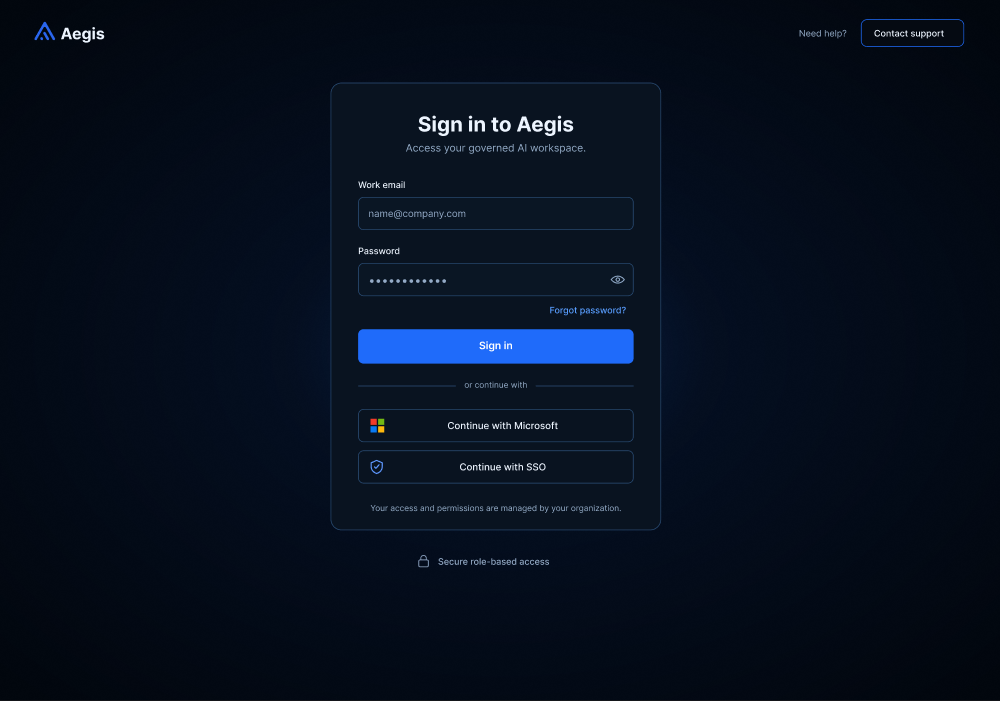
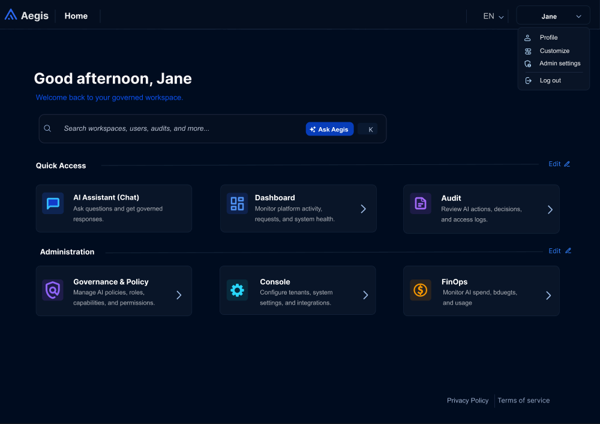
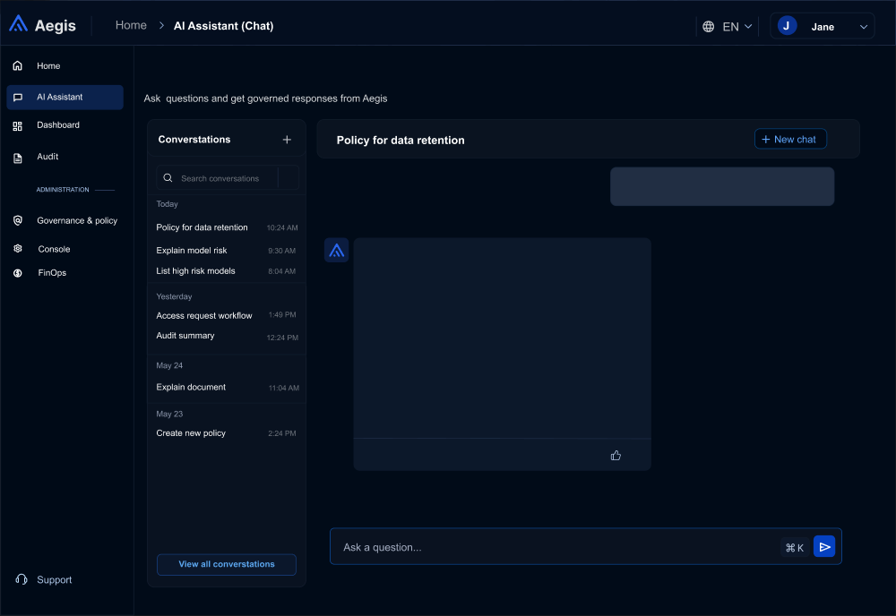
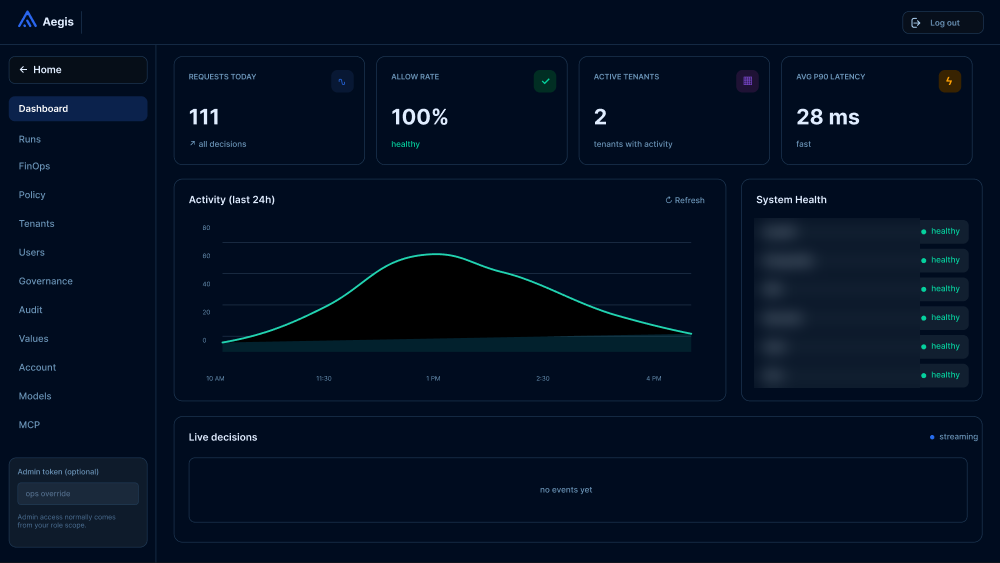

Aegis: designing governed access to AI at work
A role-based platform that lets employees use agentic AI tools while giving administrators and compliance teams control over who can do what. I was the sole UX designer on a six-person team.
The problem
Companies want their employees to use AI agents, but most can't easily govern, prove or control what those agents do. Kinaxis wanted employees to benefit from AI with access that is role-based, governed and auditable.
That meant designing for people with very different needs: an employee who just wants to ask a question, an administrator who sets the rules, and a compliance or security reviewer who needs to trust what happened.
Who I designed for
The team's brief identified several stakeholder groups. I organised the interface around three roles:
- Everyday users who need quick, clear answers from an AI assistant.
- Administrators who manage policies, settings and spend.
- Oversight roles (security, compliance) who review activity and decisions.
How I worked
This was my first UX project and I was the only designer, so I didn't inherit a ready-made process. I started by studying products people already know, such as chat assistants and role-based admin dashboards, and used them to decide which patterns to borrow and which to change for a governed setting. From there I moved quickly into prototyping in Figma, and reviewed the work with the team and the client as it developed.
[May: add 2–3 sentences on any screens you revised after feedback, and what changed. If nothing was iterated, delete this line.]
Key design decisions
1. A sign-in that explains who is in control
Enterprise users expect to sign in with their company account, so the login offers work email, Microsoft and SSO. A short line, "Your access and permissions are managed by your organization", sets expectations early: what you can see depends on your role.

2. A home screen split by what you do
The home screen separates Quick Access (AI assistant, dashboard, audit) from Administration (governance and policy, console, FinOps). Everyday users get to the assistant in one click, and administrative tools are grouped so they don't crowd the main tasks. This mirrors the roles above.

3. A familiar chat experience
For the assistant I followed the chat pattern people already know: conversation history on the left, the current conversation in the centre and a simple input at the bottom. Keeping it familiar lets users focus on their question rather than learning a new tool. A goal for governed responses was plain-language messages when something is not permitted, so a denial explains itself instead of leaving the user stuck.

4. A separate dashboard for administrators
Administrators need a different view from everyday users. The dashboard leads with a few headline numbers, then activity over time and system status, with navigation for deeper admin areas on the left. Some details are blurred in this image for confidentiality.

Outcome
The design moved from an MVP to a beta to a final prototype through feedback loops with the client, and was demonstrated at Design Day. [May: add anything the client or audience said about the design, if you have it.]
What I learned, and what I'd do differently
Being the only designer on my first project taught me how much a design process matters when you don't have one handed to you. If I did it again, I would:
- Ask the client direct questions early, including who the real users are and what a good outcome looks like, instead of waiting for feedback to come to me.
- Talk to a few real employees before designing, and test the prototype with them.
- Set up a regular design review with the developers so decisions are shared, not made in isolation.
- Write down my design decisions as I go, so the reasoning is easy to explain later.